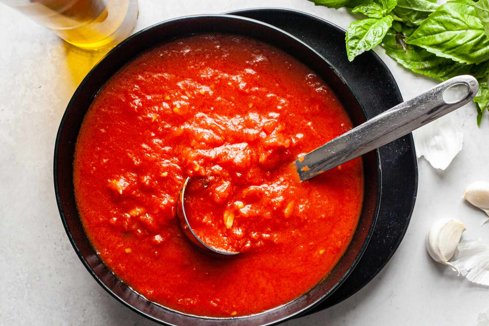

Tomato Sauce

Description
This from scratch tomato sauce recipe is bursting with flavor! Both delicious and versatile, this recipe is perfect for pasta, pizza, or even a tomato soup if you add cream. Built to be seasoned to taste, follow these directions for the first time and then iterate in the future to add in your favorite herbs and seasonings!
Note: All ingredient amounts are an estimation. Add flavor until it feels like the right amount, experiment to find your perfect balance!
Ingredients
- 12 - 15 on the vine tomatoes
- 1 fennel bulb
- 1 yellow onion
- 5 garlic cloves
- 1 tbsp kosher salt
- 1/2 tsp black pepper
- 1 tbsp dried oregano
- 1/4 tsp red chili flake
- 6 leaves fresh basil
- 1 tsp thyme
- 1 tbsp balsamic vinegar
- 2 tbsp olive oil
Steps
- Preheat oven to 350 degrees
- While oven is preheating, peel and dice whole onion, peel and smash garlic cloves, and chop fennel (use every part of the fennel!)
- Spray a baking sheet with non-stick spray and add chopped vegetables
- Drizzle vegetables with 1 tbsp of olive oil and sprinkle with salt
- Put vegetables in pre-heated oven, cook for 15-20 minutes until vegetables are fully cooked and starting to get some color
- While vegetables are cooking, wash and cut all tomatoes into quarters
- Heat a large pot on your stove with 1 tbsp of olive oil over medium heat
- Add tomatoes to pot and allow to start stewing while vegetables finish cooking
- Once vegetables are ready, remove from oven and add into pot along with tomatoes
- Add all seasonings and stir
- Allow to cook for 5 - 10 minutes, stirring occasionally
- Remove pot from heat, using an immersion blender blend all ingredients until smooth
- Return to stove on low heat, taste sauce and adjust seasoning to taste
- Implement into your favorite pasta, pizza, or add 1/2 cup heavy cream and simmer to make a tomato soup
- Freeze any leftovers for future use
Back to Home